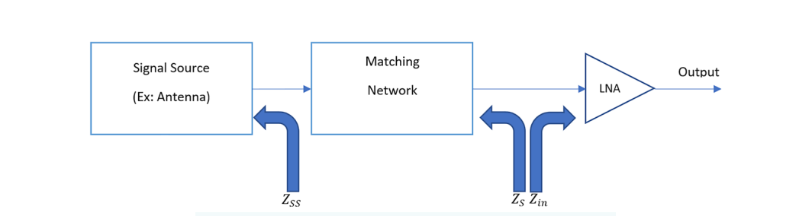
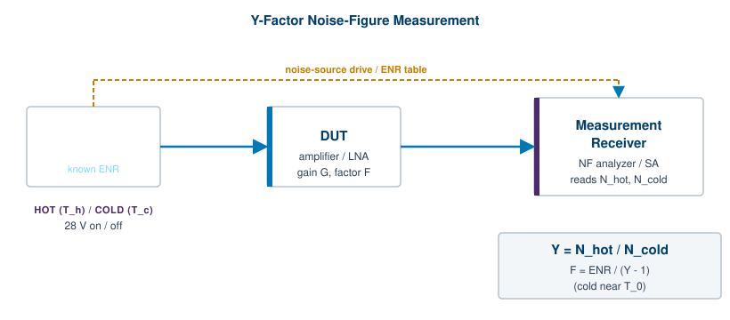
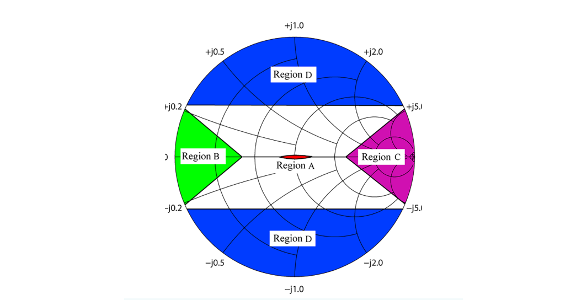
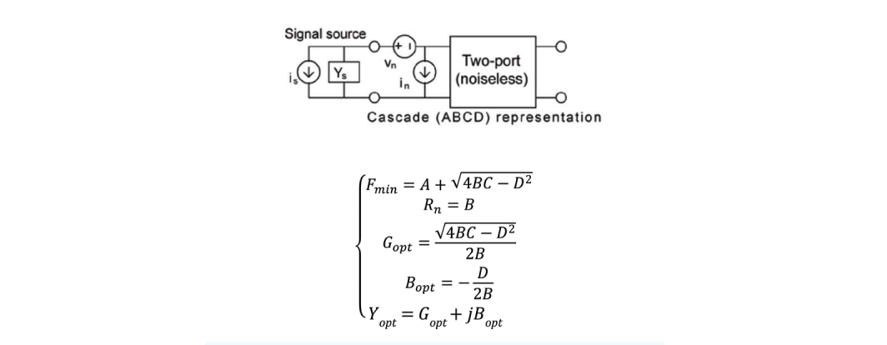

Every receiver adds noise. The art of a low-noise design is to add as little as possible, and the science of it begins with knowing exactly how much a device contributes and under what conditions. This chapter builds that knowledge from the ground up. It starts with the four numbers that fully describe a device's noise behavior, explains why a single noise-figure value is not enough for serious design work, and ends with how those numbers are measured on modern instruments.
The reader who designs low-noise amplifiers will recognize a recurring tension here. The matching network that delivers maximum power to a device is rarely the same network that delivers minimum noise. Resolving that tension is impossible without noise parameters, so we treat them as the foundation and noise figure as a consequence.
RF designers spend a great deal of time on input power matching. The usual goal is to build a matching network between a 50-ohm signal source and the device so that the maximum achievable power reaches the device input. In practice this means optimizing the network until the reflection coefficient it presents to the source is as low as possible, often better than 10 dB return loss, across the band of interest. Power matching is a well-understood, well-tooled discipline.
Designers working on low-noise amplifiers care about something else as well: minimizing the noise factor. Noise factor, F, is defined as the ratio of the signal-to-noise ratio at the input to the signal-to-noise ratio at the output.
F = SNRin / SNRout
Because the device can only degrade SNR, F is always greater than or equal to 1 for a real device. Minimizing F maximizes the signal-to-noise ratio that survives the device, which in turn maximizes the sensitivity of the system. Noise figure, NF, is simply the noise factor expressed in decibels: NF = 10 log10(F). A device with F = 2 has a 3 dB noise figure.
This raises the central question of the chapter. Can a single input matching network do both jobs at once: present a low input reflection coefficient and produce a low noise figure? Sometimes yes, often no. To know which, you have to know the noise parameters of the device before any matching is applied.
What the noise parameters are. Noise parameters describe the autocorrelation and cross-correlation between the input and output noise waves (or, equivalently, the noise voltages and currents) generated inside a device. The most general representation is the noise correlation matrix. In day-to-day work, though, engineers use a compact set of noise parameters rather than the matrix directly. The parameters carry the same information in a form that is easier to reason about.
There are several equivalent formulations, but they all reduce to four real numbers. The first is the minimum noise factor, Fmin, sometimes given as the minimum noise figure NFmin in dB, or as the minimum noise temperature Tmin. These are related through:
Fmin = 1 + Tmin / T0, with T0 = 290 K
T0 = 290 K is a reference temperature, not necessarily the actual lab temperature. It is close to room temperature and, when multiplied by Boltzmann's constant, yields a convenient 4 x 10-21 joules. That convenience mattered a great deal in the era of slide rules, and the convention has stuck.
Fmin and NFmin tell you the absolute lowest noise factor and noise figure the device can reach, but they do not tell you how to get there. That information comes from the second noise parameter, the optimum source reflection coefficient, Γopt. When the source presents Γopt to the device, the device achieves Fmin. Γopt can also be expressed as an optimum impedance Zopt or optimum admittance Yopt; the three are just different coordinates for the same point.
So far that is three pieces of information packed into two parameters: the best achievable noise factor, and the source condition that achieves it. Two more parameters complete the picture, and the next sections introduce them in the context where they matter.

Consider the typical front end shown in Figure 7.1. The signal source has an output impedance denoted Zss. The low-noise amplifier, the LNA, is the device modeled by noise parameters, and its input impedance is Zin. Between the source and the LNA sits a passive matching network.
That matching network serves different purposes in different systems. The most common job is to transform Zss into a source impedance Zs that equals the complex conjugate of Zin. When Zs is the conjugate of Zin, all of the available source power is delivered to the LNA, none is reflected, and the input is power matched. This is the classic conjugate-match condition.
Now bring noise into the picture. If the LNA's Zopt is known, you can check whether the noise figure under this matching condition comes close to NFmin. Two cases follow.
If the matching network happens to produce Zs = Zopt, then the achieved noise figure equals NFmin. In this fortunate case the LNA is both power matched and noise matched at the same time. The single network does both jobs, and the design is as good as the device allows.
If instead the network produces Zs not equal to Zopt, the LNA noise figure will be larger than NFmin. The LNA is power matched but not noise matched. You delivered all the power, but you paid a noise penalty for it.
The matching trade-off. The designer can flip the priority. A network can be built to noise match the LNA, presenting Zs = Zopt, at the cost of a power mismatch. In that case some input power reflects back toward the source and the power gain drops. The gain that results under the noise-matched condition is what datasheets call the associated gain, Gass. It is the gain you actually get when the device is set up for its best noise figure rather than its best power transfer.
This trade-off is the practical heart of low-noise design. For a sensitivity-limited receiver, the first stage usually wins more from noise matching than from power matching, because the noise figure of the first stage dominates the noise figure of the whole chain (the cascade relationship, often called the Friis formula, makes this explicit). For a stage deeper in the chain, where the upstream gain has already lifted the signal well above the noise floor, power matching may be the better choice. Knowing which to favor, and by how much, requires the device noise parameters and the cascade math together.
Going Deeper - Why the first stage dominates
In a cascade, the Friis noise-factor formula is Ftotal = F1 + (F2 - 1)/G1 + (F3 - 1)/(G1 G2) + ... Each later stage's noise contribution is divided by the cumulative gain ahead of it. A high-gain, low-noise first stage therefore sets the floor for the entire receiver, which is exactly why so much effort goes into noise matching that one device.
The question left open in Section 7.2 is quantitative. When the LNA is not noise matched, by how much does the noise factor rise above Fmin? The answer depends on the last noise parameter, the one that governs sensitivity to mismatch.
The conventional choice for this parameter is the equivalent noise resistance, Rn. With Rn in hand, the full noise-factor expression for the device can be written in terms of admittances:
F = Fmin + (Rn / Gs) · |Ys - Yopt|2
Here Ys = 1/Zs is the source admittance presented to the device, Yopt = 1/Zopt is the optimum source admittance, and Gs is the real part of Ys = Gs + jBs. The structure of this equation is worth pausing on. The first term, Fmin, is the floor. The second term is a penalty that grows with the squared distance between the actual source admittance and the optimum source admittance, scaled by Rn/Gs. When Ys = Yopt, the penalty vanishes and F = Fmin, as it must.
The same relationship can be written in reflection-coefficient coordinates, which many designers find more natural when they are already living in S-parameter space:
F = Fmin + (4 Rn / Z0) · |Γs - Γopt|2 / [(1 - |Γs|2) |1 + Γopt|2]
The conversion from impedance to reflection coefficient is the conventional Γ = (Z - Z0)/(Z + Z0), where Z0 is the characteristic impedance, usually 50 ohms. Both forms say the same thing: noise factor rises as you move the source away from its optimum, and Rn sets how steeply it rises.
A small Rn means the device is forgiving. The noise figure stays near Fmin even when the source impedance wanders, which is valuable when the source is an antenna whose impedance shifts as nearby objects move. A large Rn means the device is fussy and demands a source held tightly at Yopt. Rn, then, is not a noise floor but a sensitivity, the slope of the noise penalty around the optimum.
A designer steeped in traveling waves, S-parameters, and reflection coefficients may find the noise-factor expression of Section 7.3 a little foreign. The plus sign in F = Fmin + (Rn/Gs)|Ys - Yopt|2 is not the multiplicative structure that S-parameter manipulation usually produces. There is a deeper problem too.
Suppose you add a short, lossless transmission line at the device input and want to re-derive the noise parameters. Adjusting the phase of Γopt for the line length is straightforward, and reassuringly, Fmin does not change. A lossless network cannot improve or degrade the best achievable noise factor. But Rn does change, and it changes in a way that is not simple to track. That makes Rn awkward to carry through a design where lossless elements come and go.
A better noise parameter. Although Rn is in common use, it is not a fundamental noise parameter. A more fundamental choice is the Lange invariant parameter, N. Four properties make N the better tool.
First, like Fmin, N does not change when the device is embedded in a lossless passive network. In the example above, the short interconnect at the input leaves both N and Fmin untouched. N is invariant where Rn is not, which is the source of its name.
Second, N provides a built-in accuracy check on noise-parameter measurement. The literature shows that the inequality Fmin - 1 ≤ 4N must hold for any physically valid device. If an extracted set of noise parameters violates it, the measurement contains errors. That is a rare and welcome thing: a parameter that polices its own consistency.
Third, for many transistors the approximation Fmin - 1 ≈ 2N holds well. That makes N convenient for back-of-the-envelope work, letting a designer estimate one quantity from the other without a full extraction.
Fourth, N scales with transistor size in roughly the same way Fmin does, so the two track each other as a process is scaled, which helps when porting a design across device geometries.
Like Rn, N expresses the sensitivity of noise factor to a mismatch between Ys and Yopt. The two are directly related:
N = Rn · Gopt
where Gopt is the real part of the optimum admittance Yopt = Gopt + jBopt. With this relationship the noise factor can be recast in terms of N:
F = Fmin + (N / (Gs · Gopt)) · |Ys - Yopt|2
Whether a designer adopts Rn or N, and whether or not the noise-factor expression is simplified, the underlying measurement does not change. The four noise parameters can be obtained by a source-pull method using impedance tuners or impedance generators, by a long-line method, by a six-port method, or by other techniques. The choice of parameter is a choice of bookkeeping, not of physics.
The challenge of measuring noise parameters is old and the approaches are varied. Some represent noise signals as power waves. Others take a single noise-figure measurement and fit it to a device noise model derived analytically or from prior characterization. The dominant approach today uses source-impedance tuners to generate several different source admittances, the Y values (Ys), at the device input, then uses a receiver to measure the resulting output noise powers. The noise parameters are extracted from those measurements by data fitting.
Before getting to the multi-impedance extraction, it helps to understand the single building block on which all of it rests: the Y-factor method for measuring a single noise figure.
The Y-factor method. A calibrated noise source produces two known output states, a hot state at noise temperature Th and a cold state at Tc. Many noise sources are noise diodes switched by a bias voltage, with the excess noise above the reference written as the excess noise ratio, ENR. The receiver measures the output noise power in each state, Nhot and Ncold, and forms their ratio:
Y = Nhot / Ncold
From Y and the known ENR, the device noise factor follows. With the cold state near T0, the working relationship is:
F = ENR / (Y - 1)
A large Y means the device adds little noise of its own, so the hot and cold states stand far apart at the output. A Y near 1 means the device's own noise swamps the difference between the source states, which is the signature of a noisy device or a poorly chosen measurement. Figure 7.4 shows the basic setup.

From one noise figure to four noise parameters. A single Y-factor measurement gives one noise figure for one source impedance. Extracting all four noise parameters requires the noise figure at several different source admittances. Most extraction methods rest on manipulating Ys = 1/Zs by varying the matching network, sweeping the source admittance across the Smith chart.

By generating at least four distinct admittances, Ys1, Ys2, Ys3, and Ys4, and measuring the noise factors F1, F2, F3, and F4 for each, the noise-factor expression of Section 7.3 yields a system of equations. In matrix form:
A x = F
For n ≥ 4 measured complex admittances Ys = Gs + jBs, A is an n x 4 matrix computed from the admittances, x is the vector of unknown noise parameters, and F = [F1 F2 F3 F4]T is the vector of measured noise factors. The four unknowns, often labeled A, B, C, and D in the ABCD noise model, are obtained by solving the system. They map directly to the standard noise parameters.

The ABCD model in Figure 7.3 refers the device noise to the input as a noise voltage vn and a noise current in. The relationship between the extracted unknowns and the noise parameters runs through the noise-correlation matrix, which can be written in terms of the noise parameters and contains the autocorrelation of vn, the autocorrelation of in, and their cross-correlation.
Why this is hard. The process looks tidy on paper, but it is demanding in practice. It depends on measuring very low noise powers that are easily corrupted by interference and instrument error. Because Yopt is complex, vector calibration is required, which makes a vector network analyzer indispensable to the setup. A small error in the measured admittances or noise powers can swing the extracted parameters, so the choice of where to place the source admittances matters a great deal.
Choosing the admittances. Research on noise-parameter extraction has long focused on which source admittances make the system solvable without spending excessive time taking measurements. A consistent finding is that one admittance should sit near the center of the Smith chart. For the others, a uniformly distributed pattern across the chart gives reasonable extraction from only a few points, and a deliberately non-uniform spread can improve it further.
Historically, getting a well-conditioned system meant adding more admittances, sometimes well over twenty. Newer measurement theory shows that four well-chosen admittances are enough. Recent work used linear algebra to find the admittances that guarantee a diagonally dominant matrix A, which keeps the system numerically stable. Because the placement was not constrained to single points, the optimal admittances emerged as four regions on the Smith chart, the regions A, B, C, and D in Figure 7.2.
Each region plays a distinct role. Region A is a well-matched region that fixes the overall noise level of the device. Region B isolates the input-referred noise voltage vn. Region C isolates the input-referred noise current in. Region D determines the correlation between vn and in. The regions can be reshaped by choosing different scaling factors, which lets the matching network of Figure 7.1 cover a wider frequency range.
Going Deeper - From points to regions to broadband measurement
The shift from a constellation of fixed admittance points to numerically tunable regions is what opens the door to true broadband noise-parameter measurement. Mechanical impedance tuners rely on long transmission lines to separate the admittances, which makes them strongly frequency dependent. Digital impedance generators are designed to hold the source admittances inside the optimal regions across wide frequency ranges, so the four states stay valid as frequency changes. That allows concurrent extraction of noise parameters over a very wide band with only four generator states.
It is worth restating the difference between a noise figure and the noise parameters, because the two are easy to conflate. For any device, the noise figure measures the degradation of signal-to-noise ratio caused by that device. But noise figure is not a fixed property of the device alone. It depends on the source impedance Zs presented by whatever circuit drives the device, such as the matching network in Figure 7.1.
Change the driving impedance and the noise figure changes with it. An antenna whose impedance shifts because a hand or a metal object moves nearby will change Zs, and therefore change the noise figure of the stage it feeds. To predict how much the noise figure moves, you need the device noise parameters. They give the complete picture of the device's noise behavior, from which any specific noise figure can be computed, along with the best achievable noise figure and the source condition that reaches it.
Why transistor noise parameters are non-negotiable. A low-noise LNA design is simply not possible without the noise parameters of the transistors involved. Without them a designer has no way to compute the LNA noise figure under a given match, no way to find the optimum match, and no way to predict the penalty for missing it. Industry-standard simulation tools are built to accept noise parameters directly, and they produce the most accurate noise model available. Good tools and good models are what let engineers do their best work.
In summary, noise parameters do the following:
That last point has real bottom-line consequences. Power budget is precious in battery-operated and densely integrated systems, and a noise-parameter-driven match can buy noise-figure margin without buying watts.
The methods above describe what is measured. Modern instruments change how it is measured, and the change is significant for anyone characterizing devices across wide bands.
The traditional path used mechanical impedance tuners. These rely on long transmission lines to separate the source admittances enough for a clean extraction, which makes them slow to set and strongly frequency dependent. A measurement tuned for one band has to be retuned for another. For a single spot frequency this is acceptable, but for broadband characterization it becomes a bottleneck.
Digital impedance generators take a different approach. They are designed to hold the source admittances within the optimal Smith-chart regions across wide frequency ranges. Because the four required states stay valid as frequency changes, noise parameters can be extracted concurrently over a very wide band using only four generator states rather than a dense constellation of points. The result is a faster, broader, and more repeatable measurement.
BNC in Practice - Instruments for noise characterization
Berkeley Nucleonics builds RF and microwave test instruments used in low-noise design and device characterization, including impedance-tuning and noise-measurement equipment. Specific models, frequency ranges, and performance figures change over time, so confirm any product capability against the current BNC datasheet before relying on it for a measurement plan. Verify against current datasheet.
The broader point is that noise-parameter measurement has moved from a slow, frequency-by-frequency exercise into a fast, broadband one. That shift matters because the devices being characterized now operate across wider bands than ever, from sub-6 GHz wireless to millimeter-wave front ends. The theory in this chapter has not changed. The speed and bandwidth over which it can be applied have.
Take it interactively. The quiz lives on its own page with hidden answers - write your attempt first (even four characters works), then reveal. Self-graded. About 10 minutes.
Or read the questions and answers inline below (preserved for print and offline use).
[1] D. A. Brown, "The Nuts and Bolts of Radio Frequency," Berkeley Nucleonics Corporation, first edition. Source text for this chapter. Verify before publication.
[2] H. Hillbrand and P. Russer, "An efficient method for computer-aided noise analysis of linear amplifier networks," IEEE Transactions on Circuits and Systems, 1976 (noise-correlation matrix formulation). Verify before publication.
[3] R. Q. Lange, on the invariant noise parameter and the relationship between Fmin - 1 and 4N for low-noise devices. Verify exact citation and inequality form before publication.
[4] H. Fukui, "Available power gain, noise figure, and noise measure of two-ports and their graphical representations," IEEE Transactions on Circuit Theory, 1966 (Fmin, Gopt, Rn formulation). Verify before publication.
[5] Keysight / industry application notes on noise-figure measurement and the Y-factor method, including ENR usage and cold-source techniques. Verify current edition before publication.
[6] Recent literature on four-impedance noise-parameter extraction and diagonally dominant admittance selection on the Smith chart. Verify specific citation before publication.